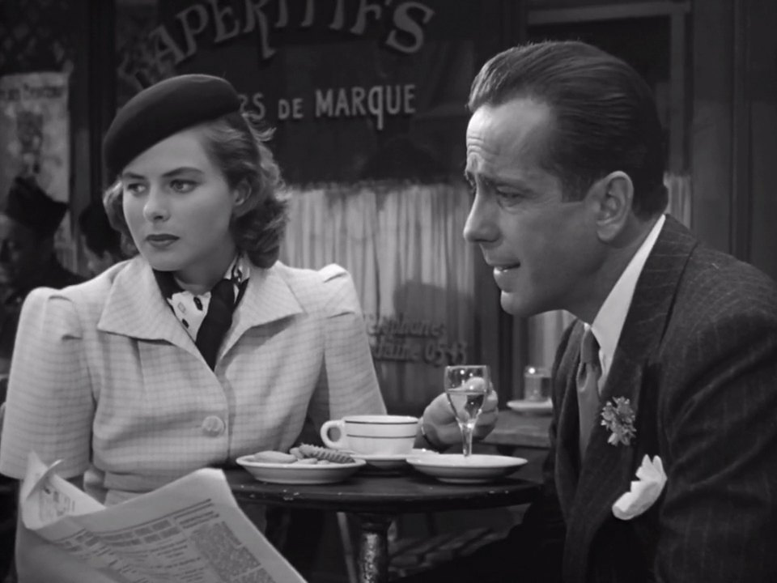
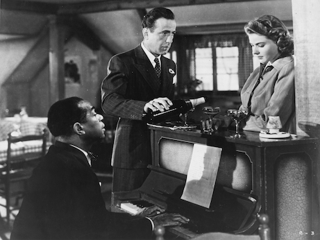

AVATAR
Genre: Science fiction film
Release date:
December 10, 2009(London premiere)
December 17, 2009(United Kingdom)
December 18, 2009(United States)
Avatar, marketed as James Cameron's Avatar, is a 2009 American[7][8] epic science fiction film directed, written, produced, and co-edited by James Cameron, and starring Sam Worthington, Zoe Saldana, Stephen Lang, Michelle Rodriguez, and Sigourney Weaver. The film is set in the mid-22nd century, when humans are colonizing Pandora, a lush habitable moon of a gas giant in the Alpha Centauri star system, in order to mine the mineral unobtanium,[9][10] a room-temperature superconductor.[11] The expansion of the mining colony threatens the continued existence of a local tribe of Na'vi – a humanoid species indigenous to Pandora. The film's title refers to a genetically engineered Na'vi body with the mind of a remotely located human that is used to interact with the natives of Pandora.[12]
Development of Avatar began in 1994, when Cameron wrote an 80-page treatment for the film.[13][14] Filming was supposed to take place after the completion of Cameron's 1997 film Titanic, for a planned release in 1999,[15] but, according to Cameron, the necessary technology was not yet available to achieve his vision of the film.[16] Work on the language of the film's extraterrestrial beings began in 2005, and Cameron began developing the screenplay and fictional universe in early 2006.[17][18] Avatar was officially budgeted at $237 million.[3] Other estimates put the cost between $280 million and $310 million for production and at $150 million for promotion.[19][20][21] The film made extensive use of new motion capture filming techniques, and was released for traditional viewing, 3D viewing (using the RealD 3D, Dolby 3D, XpanD 3D, and IMAX 3D formats), and for "4D" experiences in select South Korean theaters.[22] The stereoscopic filmmaking was touted as a breakthrough in cinematic technology.[23]
Avatar premiered in London on December 10, 2009, and was internationally released on December 16 and in the United States and Canada on December 18, to positive critical reviews, with critics highly praising its groundbreaking visual effects.[24][25][26] During its theatrical run, the film broke several box office records and became the highest-grossing film of all time, as well as in the United States and Canada,[27] surpassing Cameron's Titanic, which had held those records for twelve years.[28] It also became the first film to gross more than $2 billion[29] and the best-selling film of 2010 in the United States. Avatar was nominated for nine Academy Awards, including Best Picture and Best Director,[30] and won three, for Best Art Direction, Best Cinematography and Best Visual Effects. Following the film's success, Cameron signed with 20th Century Fox to produce four sequels: Avatar 2 and Avatar 3 are currently filming, and will be released on December 18, 2020, and December 17, 2021 respectively; subsequent sequels will start shooting as soon as they wrap filming, and will be released in 2024 and 2025.[31] Several cast members are expected to return, including Worthington, Saldana, Lang, and Weaver
In 2154, humans have depleted Earth's natural resources, leading to a severe energy crisis. The Resources Development Administration (RDA for short) mines for a valuable mineral — unobtanium — on Pandora, a densely forested habitable moon orbiting the gas giant Polyphemus in the Alpha Centauri star system.[10] Pandora, whose atmosphere is poisonous to humans, is inhabited by the Na'vi, a species of 10-foot tall (3.0 m), blue-skinned, sapient humanoids[34] that live in harmony with nature and worship a mother goddess named Eywa.
To explore Pandora's biosphere, scientists use Na'vi-human hybrids called "avatars," operated by genetically matched humans; Jake Sully, a paraplegic former Marine, replaces his deceased identical twin brother as an operator of one. Dr. Grace Augustine, head of the Avatar Program, considers Sully an inadequate replacement but accepts his assignment as a bodyguard. While protecting the avatars of Grace and fellow scientist Dr. Norm Spellman as they collect biological data, Jake's avatar is attacked by a thanator and flees into the forest, where he is rescued by Neytiri, a female Na'vi. Witnessing an auspicious sign, she takes him to her clan, whereupon Neytiri's mother Mo'at, the clan's spiritual leader, orders her daughter to initiate Jake into their society.
 Movies
Movies
CASABLANCA

Genre: Science fiction film
Release date:
November 26, 1942(Hollywood Theatre)
January 23, 1943(United States)
Casablanca is a 1942 American romantic drama film directed by Michael Curtiz and based on Murray Burnett and Joan Alison's unproduced stage play Everybody Comes to Rick's. The film stars Humphrey Bogart, Ingrid Bergman, and Paul Henreid; it also features Claude Rains, Conrad Veidt, Sydney Greenstreet, Peter Lorre, and Dooley Wilson. Set during World War II, it focuses on an American expatriate who must choose between his love for a woman and helping her and her husband, a Czech Resistance leader, escape from the Vichy-controlled city of Casablanca to continue his fight against the Nazis.
Story editor Irene Diamond convinced producer Hal B. Wallis to purchase the film rights to the play in January 1942. Brothers Juliusand Philip G. Epstein were initially assigned to write the script. However, despite studio resistance, they left to work on Frank Capra's Why We Fight series early in 1942. Howard E. Koch was assigned to the screenplay until the Epsteins returned a month later. Principal photography began on May 25, 1942, ending on August 3; the film was shot entirely at Warner Bros. Studios in Burbank, Californiawith the exception of one sequence at Van Nuys Airport in Van Nuys, Los Angeles.
Although Casablanca was an A-list film with established stars and first-rate writers, no one involved with its production expected it to be anything out of the ordinary.[5] It was just one of hundreds of pictures produced by Hollywood every year. Casablanca was rushed into release to take advantage of the publicity from the Allied invasion of North Africa a few weeks earlier.[6] It had its world premiere on November 26, 1942, in New York City and was released nationally in the United States on January 23, 1943. The film was a solid if unspectacular success in its initial run.
Casablanca went on to win three Academy Awards – Best Picture, Director (Curtiz) and Adapted Screenplay (the Epsteins and Koch) – and gradually its reputation grew. Its lead characters,[7][8] memorable lines,[9][10][11] and pervasive theme song[12] have all become iconic and the film consistently ranks near the top of lists of the greatest films in history.
Petty crook Ugarte boasts to Rick of "letters of transit" obtained by murdering two German couriers. The papers allow the bearers to travel freely around German-controlled Europe and to neutral Portugal, and are priceless to the refugees stranded in Casablanca. Ugarte plans to sell them at the club, and asks Rick to hold them. Before he can meet his contact, Ugarte is arrested by the local police under the command of Captain Louis Renault, an unabashedly corrupt Vichy official. Ugarte dies in custody without revealing that he entrusted the letters to Rick.
Then the reason for Rick's bitterness—former lover Ilsa Lund—enters his establishment. Spotting Rick's friend and house pianist, Sam, Ilsa asks him to play "As Time Goes By." Rick storms over, furious that Sam disobeyed his order never to perform that song, and is stunned to see Ilsa. She is accompanied by her husband, Victor Laszlo, a renowned fugitive Czech Resistance leader. They need the letters to escape to America to continue his work. German Major Strasser has come to Casablanca to see that Laszlo fails.
When Laszlo makes inquiries, Ferrari, a major underworld figure and Rick's friendly business rival, divulges his suspicion that Rick has the letters. Privately, Rick refuses to sell at any price, telling Laszlo to ask his wife the reason. They are interrupted when Strasser leads a group of officers in singing "Die Wacht am Rhein" ("The Watch on the Rhine"). Laszlo orders the house band to play "La Marseillaise". When the band looks to Rick, he nods his head. Laszlo starts singing, alone at first, then patriotic fervor grips the crowd and everyone joins in, drowning out the Germans. Strasser has Renault close the club.
Bogart and Bergman
Ilsa confronts Rick in the deserted café. When he refuses to give her the letters, she threatens him with a gun, but then confesses that she still loves him. She explains that when they met and fell in love in Paris in 1940, she believed her husband had been killed attempting to escape from a concentration camp. While preparing to flee with Rick from the imminent fall of the city to the German army, she learned Laszlo was alive and in hiding. She left Rick without explanation to nurse her sick husband. Rick's bitterness dissolves. He agrees to help, letting her believe she will stay with him when Laszlo leaves. When Laszlo unexpectedly shows up, having narrowly escaped a police raid on a Resistance meeting, Rick has waiter Carl spirit Ilsa away. Laszlo, aware of Rick's love for Ilsa, tries to persuade him to use the letters to take her to safety.
When the police arrest Laszlo on a minor, trumped-up charge, Rick persuades Renault to release him by promising to set him up for a much more serious crime: possession of the letters. To allay Renault's suspicions, Rick explains that he and Ilsa will be leaving for America.
When Renault tries to arrest Laszlo as arranged, Rick forces him at gunpoint to assist in their escape. At the last moment, Rick makes Ilsa board the plane to Lisbon with Laszlo, telling her that she would regret it if she stayed—"Maybe not today, maybe not tomorrow, but soon and for the rest of your life." Strasser, tipped off by Renault, drives up alone. Rick shoots him when he tries to intervene. When policemen arrive, Renault pauses, then orders them to "round up the usual suspects." He suggests to Rick that they join the Free French in Brazzaville. As they walk away into the fog, Rick says, "Louis, I think this is the beginning of a beautiful friendship".

Movies
MOTHER
Genre: Science fiction film
Release date:
September 5, 2017 (Venice)
September 15, 2017(United States)
Mother! (stylized as mother!)[4] is a 2017 American psychological horror film written and directed by Darren Aronofsky, and starring Jennifer Lawrence, Javier Bardem, Ed Harris and Michelle Pfeiffer. The plot follows a young woman whose tranquil life with her husband at their country home is disrupted by the arrival of a mysterious couple. Their personal family drama spills over into the house leading to the death of their son and a memorial service held at their house. After the guests leave, the couple who own the house end up at the center of a cult that turns their home into a warzone.
Mother! was selected to compete for the Golden Lion at the 74th Venice International Film Festival, and premiered there on September 5, 2017.[5] It was released in the United States on September 15, 2017, by Paramount Pictures, and has grossed $44.4 million worldwide. Although the film received generally positive reviews from critics,[6][7] its biblical allegories and depiction of violencesparked controversy.[8]In a house that has recently been burned by fire, Him, an acclaimed poet struggling with severe writer's block, places a crystal object in a pedestal. The house morphs to suddenly look newly renovated. In a bed, Mother wakes up, wondering aloud where Him is. She starts seeing things around the house that unsettle her, including visualizing a beating heart within the walls.
One day, Man turns up at the house, asking for a room. Him readily agrees, and Mother reluctantly follows suit. During his stay, Man experiences prolonged coughing fits and Mother catches a glimpse of a fresh wound by his rib area before her husband covers it with his hand. The next day, Man's wife, Woman, also arrives to stay. Mother is increasingly frustrated with her guests, while Him begs her to let them stay, telling Mother that the guests are fans of his work and that the male guest is dying, and wanted to meet Him. However, when Man and Woman accidentally break and shatter the crystallized object, Mother decides to kick them out.
The couple's two sons arrive and start to fight over the will their father has left. The Oldest Son, who will be left with nothing, mortally injures his Younger Brother, and seemingly flees, while Him, Man, and Woman take the injured son to get help. Upon returning, Him informs Mother that the son has died. Dozens of people begin arriving at the house for a wake for the dead son. More people arrive, and behave in a way that bothers Mother; she becomes angrier and eventually snaps when they flood the house. She kicks everyone out. Angry with Him for allowing so many people into the house for his own pleasure and ignoring her, she berates him before the two have sex.
The next morning, Mother announces that she is pregnant. The news leaves Him elated and inspires him to finish his work. A few months later, Mother prepares for the arrival of their child and reads Him's newest piece, which is so beautiful it drives her to tears. Upon publication, it immediately sells out every copy. In celebration, Mother prepares dinner for him when a group of fans arrives at the house. As she barricades herself in her home, more fans arrive and begin to enter the house to use the bathroom. Their behavior devolves into stealing their belongings as keepsakes, and disrupting the environment. An increasingly disoriented Mother makes her way around the house as each room devolves into chaos. Him's publisher, the Herald, takes part in the madness. Military men with guns arrive to help Mother, but a cult of devoted fans forms around Him; they start to engage in rituals.
Mother goes into labor and finds her husband, who takes her to his study, where she gives birth. The havoc outside subsides as he tells Mother that the massive crowd wants to see the baby. Refusing, she holds on tight to her son. When she falls asleep, however, he takes the baby outside to the crowd, who grab him and break his neck. Devastated, Mother makes her way to the front of the crowd where she sees the hacked corpse of her baby and witnesses the crowd eating his flesh. Furious at them, she calls them murderers and begins stabbing them with a shard of broken glass. They turn on her, beginning to strip and beat her until Him intervenes and stops it. Mother escapes the grasp of the crowd and makes her way to the cellar and the oil tank for the furnace. Despite her husband's pleas, Mother sets the oil on fire, destroying the crowd, the house, and the surrounding garden and trees.
Both Mother and Him survive, but Mother is horrifically burned while Him is unscathed. He asks her for the love she has left for him, and she agrees to give it to him. He then tears open her chest, removing her heart in the process. As he opens up the heart with his hands, a new crystal object is revealed. He places the object in its pedestal. Once again, the house changes from a burnt-out husk to a newly renovated house. A new Mother forms in a bed and wakes up, wondering aloud where Him is.
HOME